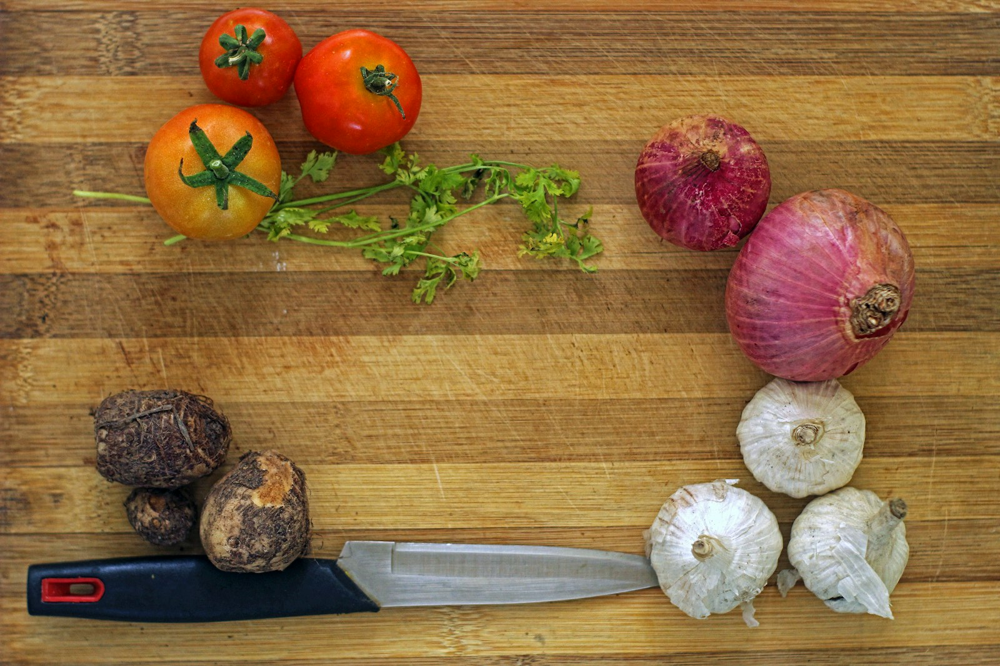

Dlouhověkost
Dlouhověkost se zaměřením na výživu
Co má data, co je konsenzus a co zatím nevíme
Mgr. Ing. Tereza Vágnerová, Ph.D.
Healthy Longevity Clinic
Klinika geriatrie a interní medicíny 1. LF UK a VFN
Klinika geriatrie a interní medicíny 1. LF UK a VFN
Část první · Stárnutí
Stárnutí je nejsilnější rizikový faktor téměř všech chronických onemocnění.
Kardiovaskulární onemocnění, diabetes 2. typu, demence, nádory, onemocnění ledvin, artritida a autoimunitní onemocnění mají jeden faktor společný.
Kohortová studie
Niccoli T, Partridge L. Ageing as a risk factor for disease. Curr Biol 2012
02
Stárnutí
U tří hlavních příčin úmrtí předstihuje věk kouření i obezitu.
Srdeční onemocnění
klasické faktory
klasické faktory
~2×
věk
~35×
Rakovina
klasické faktory
klasické faktory
~1×
věk
~28×
Alzheimerova choroba
APOE, kouření, obezita
APOE, kouření, obezita
~4×
věk
>300×
Přibližné hodnoty odečtené z grafů v citovaném přehledu. Osy nejsou srovnatelné mezi diagnózami.
Kohortová studie
03
Stárnutí
Riziko úmrtí se v dospělosti zdvojnásobí každých osm let.
8 let
na zdvojnásobení rizika
Nárůst rizika úmrtí s věkem je u člověka exponenciální. Ve vyspělých zemích se stárnutí podílí na většině úmrtí, aniž by bylo samo vedeno jako diagnóza.
Kohortová studie
Gurven M, Fenelon A . Evolution 2009
04
Healthspan
Délka života roste rychleji než délka života ve zdraví.
9,6
roku v nemoci, 2019
Globální průměr rozdílu mezi délkou života a délkou života ve zdraví. V roce 2000 to bylo 8,5 roku.
17
let v České republice
Období mezi ztrátou dobrého zdraví a smrtí. Je nasycené bolestí a ztrátou samostatnosti.
60 %
dospělých
Podíl dospělé populace s alespoň jedním chronickým onemocněním, data CDC.
Kohortová studie
Garmany A, Terzic A. JAMA Netw Open 2024 · ČSÚ, OECD, Eurostat · CDC
05
Mechanismy
Stárnutí není jedna porucha, ale souběh popsaných procesů.
Genomová instabilita
Zkracování telomer
Epigenetické změny
Ztráta proteostázy
Porucha autofagie
Deregulovaná detekce nutrientů
Mitochondriální dysfunkce
Buněčná senescence
Vyčerpání kmenových buněk
Změněná mezibuněčná komunikace
Chronický zánět
Dysbióza
Výživa zasahuje do několika z nich současně. Detekci nutrientů, zánět, proteostázu a dysbiózu ovlivňuje strava přímo. To ještě neznamená, že ovlivňuje délku života.
Mechanistické
Schmauck-Medina T et al. Aging 2022 · Copenhagen ageing meeting
06
Cíl
Cílem intervence není delší život, ale delší život ve zdraví.
Lifespan je délka života. Healthspan je délka života ve zdraví. Rozdíl mezi nimi se za poslední dvě dekády zvětšil, ne zmenšil.
07

Část druhá
Pět pilířů, na kterých prevence stojí
Žádný z nich nefunguje samostatně.
Pět pilířů
Pohyb, strava, spánek, duševní zdraví, prevence.
01
Pohyb
Silový trénink a aerobní kondice. Nejsilnější data z celé pětice.
02
Strava
Vzorec stravování, energetická rovnováha a dostatek bílkovin.
03
Spánek
Nejčastěji podceňovaný faktor. Už krátkodobá restrikce zhoršuje inzulinovou citlivost.
04
Duševní zdraví
Smysl, vztahy, zvládání stresu. Data jsou observační.
05
Prevence
Screening, vakcinace, tlak, lipidy, glykemie, ochrana kůže.
Odborný konsenzus
09
Část třetí · Pohyb
Nízká síla a nízká kondice převyšují klasické rizikové faktory.
vysoký krevní tlak
~20 %
diabetes 2. typu
~30 %
kouření
~50 %
nízká svalová síla
~250 %
nízká kardiorespirační kondice
~400 %
vliv na relativní riziko úmrtí
Kohortová studie
Mandsager K et al. JAMA Netw Open 2018 · Li R et al. Med Sci Sports Exerc 2018
10
Pohyb
VO₂max ubývá přibližně o desetinu za dekádu.
10 %
za každých deset let
Pod hranicí 18 ml/kg/min u mužů a 15 ml/kg/min u žen se ztrácí schopnost žít samostatně.
Z hlediska mortality je optimální být nad 90. percentilem pro svůj věk a pohlaví. Trénink rychlost poklesu zpomaluje, nezastaví ji.
Kohortová studie
Strasser B, Burtscher M. Front Biosci 2018 · Shephard RJ. Br J Sports Med 2009
11

Dallas Bed Rest Study
Tři týdny na lůžku ubraly tolik kondice jako čtyřicet let stárnutí.
26 %
pokles VO₂max za tři týdny
Pět dvacetiletých mužů, tři týdny klidu na lůžku, 1966. Ke hodnotám, které měli na konci té doby, se při celoživotním sledování vrátili až po šedesátce.
Kohortová studie
McGavock JM et al. J Gerontol A 2009
12
Doporučení
Sto padesát minut aerobně, dvakrát týdně silově, devět tisíc kroků.
Aerobní zátěž
150–300
minut střední intenzity týdně, nebo 75 až 150 minut vysoké intenzity, nebo odpovídající kombinace.
Silový trénink
2×
týdně, se zapojením všech hlavních svalových skupin. Kombinace obou typů zátěže snižuje riziko víc než jeden z nich.
Kroky
8–9 000
denně. Nad tuto hranici se křivka přínosu vyrovnává. Lovci a sběrači nachodili 13 až 19 tisíc.
Odborný konsenzus
WHO 2020 · Zhao M, BMJ 2020 · del Pozo Cruz B, JAMA Intern Med 2022
13

Část čtvrtá · Výživa
Vzorec stravování, ne jednotlivá živina
Jediná živina se v populačních datech téměř nikdy neprokáže sama.
Výživa
Neexistuje jeden výživový styl vhodný pro všechny.
Volbu vzorce určují preference, kultura, rozpočet a komorbidity. Úkolem je vybrat s pacientem ten, který dokáže dodržet.
Odborný konsenzus
Healthy diet in adults. UpToDate, 2026
15
Stravovací vzorce
Zdravé stravovací vzorce se shodují na čtyřech věcech.
01
Více rostlin
Zelenina, ovoce, luštěniny, orechy, celozrnné obiloviny, vláknina.
02
Méně červeného a zpracovaného masa
Zpracované maso je z obou kategorií tou problematičtější.
03
Méně cukru, soli a alkoholu
Včetně slazených nápojů a vysoce zpracovaných potravin.
04
Jiné tuky
Omezit nasycené a průmyslové trans tuky, ne tuk jako takový.
Rozdíly mezi doporučeními jednotlivých zemí jsou menší než jejich průsečík.
Metaanalýza a RCT
Healthy diet in adults. UpToDate, 2026 · Dietary Guidelines for Americans 2025–2030
16
Praktická jednotka
Talíř je praktičtější jednotka než gramáž.
Polovina
Zelenina a ovoce
Čtvrtina
Bílkovinná potravina
Čtvrtina
Celozrnné obiloviny
Tři porce zeleniny a dvě porce ovoce denně při energetickém příjmu 2000 kcal. To je ta polovina talíře.
Bílkovinná čtvrtina: luštěniny, ryby, drůbež, orechy, tofu. Obilná čtvrtina: celozrnná varianta místo rafinované.
Mléčné výrobky k tomu tři porce denně, přednostně nízkotučné. Zdroj bílkovin, vápníku, vitaminu D a kalia.
Odborný konsenzus
Dietary Guidelines for Americans 2025–2030 · Healthy diet in adults. UpToDate, 2026
17
Středomořský vzorec
Středomořský vzorec má ze všech vzorců nejlepší data.
24 %
nižší riziko KVO
23 %
nižší mortalita
Hodnoty z metaanalýzy primární prevence u žen. Vzorec je definovaný olivovým olejem, luštěninami, rybami, orechy a nízkým podílem červeného masa, ne jednou složkou.
Metaanalýza a RCT
Pant A et al. Heart 2023
18
DASH
DASH je vzorec popsaný v porcích, ne v zákazech.
4–5
ovoce
4–5
zelenina
2–3
nízkotučné mléčné
Porce denně při méně než čtvrtině energie z tuků.
Snižuje systolický i diastolický tlak víc než samotné zvýšení příjmu zeleniny a ovoce.
DASH v kombinaci s nízkým příjmem sodíku vede k poklesu tlaku srovnatelnému s účinkem antihypertenziva.
Randomizovaná studie
Appel LJ et al. N Engl J Med 1997 · Sacks FM et al. N Engl J Med 2001
19
Další vzorce
Doklady mají i rostlinné a nízkotučné vzorce.
Rostlinné a vegetariánské
Spojené s nižším rizikem kardiovaskulárních onemocnění a diabetu. U starších dospělých hlídáme bílkoviny, B12 a železo.
Nízkotučné
Historicky nejdéle zkoumané. Efekt závisí na tom, čím je tuk nahrazen: sacharidy z bílé moučky benefit ruší.
Nízkocholesterolové
Dnes se prolínají s ostatními. Samostatně se už téměř nedoporučují, ale sytí stejný princip.
Metaanalýza a RCT
Healthy diet in adults. UpToDate, 2026
20
Limity evidence
Vzorce s omezenou evidencí jsou stále populární.
Seznam takových vzorců je v principu nekonečný. Nové se objevují rychleji, než je stihne kdokoli otestovat. To není argument proti nim, ale proti jistotě.
Nízkosacharidový
Krátkodobě funguje na hmotnost. Dlouhodobá data o mortalitě chybí.
Protizánětlivý
Definice se liší mezi autory. Překrývá se se středomořským vzorcem.
Bezlepkový
Bez celiakie nebo nonceliakální senzitivity není doklad o benefitu.
Biopotraviny
Rozdíl v nutričním složení není klinicky významný.
Nepodloženo
Healthy diet in adults. UpToDate, 2026
21
Západní vzorec
Západní vzorec je definovaný spíš tím, co v něm chybí.
Co v něm je
Červené a zpracované maso, plnotučné mléčné výrobky, rafinované obiloviny, potraviny s vysokým obsahem sodíku, přidaný cukr.
Co v něm není
Vláknina, celozrnné obiloviny, luštěniny, zelenina a ovoce.
V praxi je snazší doplňovat, co chybí, než odebírat, co je navíc.
Kohortová studie
Healthy diet in adults. UpToDate, 2026
22
Vláknina
25–34 g
denně pro většinu dospělých
Doporučení je 14 g na 1000 kcal, takže cíl se posouvá s energetickým příjmem.
Vyšší příjem je spojen s nižším rizikem ischemické choroby srdeční, mozkové příhody, diabetu 2. typu, kolorektálního karcinomu a nižší celkovou mortalitou.
Metaanalýza a RCT
Healthy diet in adults. UpToDate, 2026 · Kim Y, Je Y. Am J Epidemiol 2014
23
Vláknina v porcích
Čtyři porce naplní tři čtvrtiny denního cíle.
Potravina
Porce
Vláknina
Hrášek, vařený
1 hrnek
8,8 g
Mandle
1/2 hrnku
8,7 g
Čočka, vařená
1/2 hrnku
7,8 g
Celozrnné špagety
1 hrnek
5,4 g
Bílé špagety
1 hrnek
2,5 g
Bílá rýže
1 hrnek
0,6 g
Rozdíl mezi celozrnnou a bílou variantou téže potraviny je dvoj až čtyřnásobný.
Odborný konsenzus
Healthy diet in adults. UpToDate, 2026, tabulka obsahu vlákniny
24
Ryby
Dvě porce ryby týdně mají doklad tam, kde už onemocnění je.
0,84
HR závažné KV příhody
0,82
HR pro mortalitu
Sdružená analýza mezinárodních kohort, u osob s již existujícím kardiovaskulárním onemocněním. U osob bez něj se efekt nepotvrdil.
Každých 100 g porce týdně navíc odpovídá RR 0,95 pro akutní koronární syndrom.
Kohortová studie
Healthy diet in adults. UpToDate, 2026 · sdružená analýza kohort
25
Alkohol
Přibývá důkazů, že nejlepší volbou pro celkové zdraví je nulová spotřeba alkoholu.
Už tři až šest drinků týdně je spojeno s mírně zvýšeným rizikem karcinomu prsu. Možný kardiovaskulární přínos mírné spotřeby se týká jen starších dospělých a riziko nádorů ho pravděpodobně převáží.
Healthy diet in adults · UpToDate, 2026
Kohortová studie
26
Sval a stárnutí
Svalová hmota ubývá. Síla ubývá rychleji.
30–50 %
úbytek svalové hmoty
60 %
úbytek síly stisku
Hodnoty platí pro rozmezí od třiceti do osmdesáti let. Ztráta není lineární, s věkem se zrychluje, a dolní končetiny ztrácejí víc než horní.
Prediktorem disability a mortality je síla, ne hmota. Proto se hodnotí funkce, ne jen tělesná kompozice.
Kohortová studie
Normal aging. UpToDate, 2026 · Newman AB et al. J Gerontol A 2006
27
Sarkopenie
50 %
osob nad 80 let
Sarkopenie se nad osmdesát let týká až poloviny lidí.
Rozptyl mezi studiemi je velký a závisí na definici a populaci. Souběh s osteoporózou je tak častý, že má vlastní jméno: osteosarkopenie.
Kohortová studie
Normal aging. UpToDate, 2026 · Baumgartner RN et al. Am J Epidemiol 1998
28
Sarkopenická obezita
Sarkopenická obezita je ztráta svalu skrytá pod hmotností.
Co ji odhalí
Hmotnost ani BMI ji neodhalí. Odhalí ji tělesná kompozice a funkční test.
Myosteatóza
Se svalovou hmotou klesá i její kvalita: do svalu prorůstá tuk a pojivo. Pro tento nález se používá termín myosteatóza.
V praxi
Redukce hmotnosti u starších dospělých má vždy provázet odporový trénink a dostatek bílkovin.
Kombinace nadbytku tukové tkáně a nedostatku svalové je z hlediska funkčního stavu horší než každá z nich samostatně.
Kohortová studie
Normal aging. UpToDate, 2026
29
Diagnostický postup
Sarkopenii hledáme ve čtyřech krocích.
01
Najít
Klinické podezření, dotazník SARC-F, nechtěný úbytek hmotnosti.
02
Změřit sílu
Síla stisku na dynamometru, nebo test vstávání ze sedu.
03
Potvrdit množství
Množství a kvalita svalu: DXA, bioimpedance, případně CT nebo MR.
04
Určit tíži
Fyzická výkonnost: rychlost chůze, SPPB, test vstát a jít.
Síla je vstupní parametr, ne ten poslední. Bez prvních dvou kroků se sarkopenie v ambulanci nenajde, protože hmotnost o ní nevypovídá.
Odborný konsenzus
EWGSOP2, Cruz-Jentoft AJ et al. Age Ageing 2019
30
Bílkoviny
Starší dospělí potřebují více bílkovin, než uvádí doporučená dávka.
1,0–1,2
g/kg/den · zdravý senior
Proti 0,8 g/kg/den, které platí pro dospělou populaci obecně.
1,2–1,5
g/kg/den · při onemocnění
Výjimkou je pokročilé onemocnění ledvin bez dialýzy, kde platí jiná pravidla.
25–30
g na porci
Množství, od kterého u starších dospělých spolehlivě stoupá svalová proteosyntéza.
Odborný konsenzus
PROT-AGE 2013 · ESPEN: clinical nutrition in geriatrics
31
Rozložení během dne
Rozhoduje dávka v jednom jídle, ne součet za den.
Snídaně
25–30 g
Oběd
25–30 g
Večeře
25–30 g
Tři jídla po 25 až 30 g dají 75 až 90 g bílkovin denně, což u člověka o hmotnosti 70 kg odpovídá doporučenému rozmezí.
V praxi bývá snídaně nejslabší jídlo dne. Přesunout část bílkovin do snídaně je obvykle snazší než zvýšit celkový příjem.
Odborný konsenzus
PROT-AGE 2013 · ESPEN: clinical nutrition in geriatrics
32
Bílkoviny a zátěž
Bílkovina sval nepostaví bez odporového zatížení.
Sama zvýšená dávka bílkovin bez tréninku mění svalovou hmotu málo. Trénink bez dostatku bílkovin naráží na strop. Doporučení má proto vždy dvě části.
33
Kost a sval
Chůze prospívá kosti i svalu. Chůze s odporovým tréninkem víc.
Ve velké kohortě mělo samotné chození příznivý vliv na kostní i svalové parametry. Kombinace s intermitentním odporovým cvičením měla vliv větší.
Pro pacienta to je dobrá zpráva: vstupní bariéra je chůze, kterou zvládne téměř každý, a odporová složka se přidává postupně.
Kohortová studie
Lee S et al. J Bone Metab 2022
34
Část pátá · Kalorická restrikce
Kalorická restrikce prodlužuje život modelovým organismům. U člověka data chybí.
Rizika jsou přitom konkrétní: ztráta svalové hmoty, vyšší náchylnost k infekcím, chronická únava, poruchy termoregulace. U starších dospělých se sarkopenií je restrikce bez dohledu kontraproduktivní.
Mechanistické
Lee MB et al. Science 2021
35
Kalorická restrikce
U více než poloviny myších kmenů život zkrátila.
zkrácení života
>50 %
prodloužení života
<50 %
podíl kmenů · 41 kmenů myší
Odpověď na restrikci je určená genetickým pozadím. Na jednom kmeni prodlouží život, na jiném ho zkrátí.
Proto výsledky z myší nelze přenést na člověka jako celek: lidská populace je geneticky heterogenní.
Mechanistické
Liao CY, Johnson TE, Nelson JF. Exp Gerontol 2013
36
Studie na primátech
Dvě studie na makacích, dva výsledky.
Wisconsin · 2009
Prodloužení života
Kontrolní skupina měla neomezený přístup ke krmivu s vysokým obsahem sacharózy.
NIA, Maryland · 2012
Bez signifikantního rozdílu
Kontrolní skupina měla dávkované krmivo blíž přirozené stravě. Restrikce pak délku života neovlivnila.
Rozdíl mezi studiemi nebyl v restrikci, ale v tom, co jedla kontrolní skupina. Co se prokázalo: nadbytek vysoce zpracované stravy život zkracuje.
Randomizovaná studie
Colman RJ et al. Science 2009 · Mattison JA et al. Nature 2012
37

Část šestá
Doplňky stravy
Nejčastější dotaz v ambulanci a nejslabší část evidence.
Doplňky stravy
Žádný doplněk dosud u člověka neprodloužil život.
To není totéž jako „doplňky nefungují“. Některé spolehlivě doplní deficit nebo zlepší funkční parametr. Žádný ale nemá doklad o prodloužení života u člověka.
Nepodloženo
39
Kde má suplementace oporu
Čtyři položky, u kterých stojí za to ptát se na příjem.
Omega-3
Nízký příjem EPA a DHA patří mezi častější ovlivnitelné faktory mortality. Omega-3 index nad 8 % odpovídá nižšímu riziku.
Kohortová studie
Vitamin D
Deficit je běžný a u seniorů je tvorba v kůži výrazně nižší. Suplementace řeší deficit, ne stárnutí.
Metaanalýza a RCT
Hořčík
Kofaktor více než tří stovek enzymů. Nižší příjem je v populaci častý, souvislost s mortalitou je observační.
Kohortová studie
Kreatin
Nejlépe ověřený doplněk pro svalovou sílu, u obou pohlaví. Relevantní právě u sarkopenie.
Metaanalýza a RCT
Dávkování patří do individuální konzultace, ne na slide. Vždy po kontrole laboratorních hodnot a medikace.
Kohortová studie
McBurney MI, Am J Clin Nutr 2021 · Leone N, Epidemiology 2006
40
Kreatin
Kreatin je z doplňků pro sílu nejlépe ověřený.
Vlastní látka organismu, syntetizovaná převážně v jádrech. Ve formě kreatinfosfátu obnovuje ATP.
Zvyšuje svalovou sílu i objem svalové hmoty, nezávisle na pohlaví. V přehledu šestnácti studií byl přírůstek síly výrazně vyšší než u placeba.
U starších osob se zkoumá i bez současného tréninku. Data naznačují oddálení atrofie a lepší funkční výkon, ale jsou zatím malá.
Pro geriatrickou praxi je zajímavý kvůli sarkopenii, ne kvůli výkonu v posilovně.
Metaanalýza a RCT
Moon A et al. Curr Aging Sci 2013
41
Část sedmá
Co měřit
Funkce, trend, a jen ty parametry, na které umíme reagovat.
Funkční markery
Funkční testy řeknou víc než jeden laboratorní parametr.
Svalová síla
Síla stisku na dynamometru, vstávání ze sedu, nošení zátěže. Rychlé, opakovatelné, bez přístrojů.
Kardiorespirační kondice
Spiroergometrie, nebo odhad ze zátěžového testu. Z jednotlivých parametrů koreluje s mortalitou nejsilněji.
Stabilita
Výdrž ve stoji na jedné noze. Deset sekund, bez opory, bez vybavení.
Odborný konsenzus
43
Stabilita
Deset sekund na jedné noze předpovídá přežití.
90 %
projde test
65 %
neprojde test
Pravděpodobnost přežití v následujících sedmi letech. V šedesáti letech test nezvládne asi pětina lidí, v sedmdesáti přibližně polovina, v osmdesáti projde jen desetina.
Jde o asociaci, ne o kauzalitu. Test ale trvá deset sekund a nepotřebuje nic.
Kohortová studie
Araujo CG et al. Br J Sports Med 2022
44
Biomarkery
Biomarkery, u kterých stojí za to sledovat trend.
Tlak
Cíl do 120/70 mmHg. Každých 20 mmHg systolického tlaku navíc riziko mozkové příhody a infarktu zdvojnásobuje.
Lipidy
LDL, apolipoprotein B a Lp(a). Lp(a) stačí změřit jednou v životě, je dána geneticky.
Glykemie
Glykemie nalačno, HbA1c, případně inzulin a C-peptid. Trend je informativnější než jedna hodnota.
Ostatní
Krevní obraz, základní biochemie, vitamin D, tělesná kompozice (DXA nebo bioimpedance).
Screening podle věku a pohlaví patří k tomu: mamografie, cytologie, kolonoskopie, PSA po dohodě s pacientem. Preventivní prohlídka to už obsahuje.
Odborný konsenzus
Overview of preventive care in adults. UpToDate, 2026
45
Prevence
Nutriční péče patří do preventivní prohlídky, ne mimo ni.
Preventivní prohlídka už obsahuje tlak, lipidy, glykemii a screeningy. Chybí v ní obvykle dvě věci, které stojí jednu minutu.
- nechtěný úbytek hmotnosti za poslední půlrok
- funkční test: stisk, vstávání ze sedu nebo stoj na jedné noze
Obojí je vstupní branou k diagnóze sarkopenie a obojí lze doplnit bez jediného dalšího přístroje.
Odborný konsenzus
Overview of preventive care in adults. UpToDate, 2026
46
Část osmá
Mýty
Tři tvrzení, která se v oboru dlouhověkosti drží déle, než odpovídá jejich datům.
47
Resveratrol
Sirtuiny v původních studiích aktivovalo použité barvivo, ne resveratrol.
Navazující práce původní výsledky nereplikovaly a zjistily, že resveratrol SIRT1 u člověka neaktivuje.
K dávce použité v laboratoři by bylo potřeba vypít stovky sklenic vína denně.
Firma založená na této hypotéze byla prodána za 720 milionů dolarů a pět let po akvizici zanikla. Klinické testování bylo ukončeno pro renální komplikace.
Nepodloženo
Pezzuto JM. Biomol Ther 2019 · Howitz KT et al. Nature 2003
48
NAD+ prekurzory
NMN a NR: důkazy jsou zatím převážně na myších.
Co platí
Hladina NAD+ s věkem klesá a NAD+ je nezbytný pro energetický metabolismus, opravy DNA a aktivitu sirtuinů.
Co nevíme
První studie u člověka jsou z roku 2016 (NR) a 2020 (NMN). Výsledky jsou sporné, dlouhodobá data chybí. V programu ITP NR myším život neprodloužil.
Proč opatrnost
U vysokých dávek niacinu se objevily doklady o zánětlivém procesu v cévách. Antagonistická pleiotropie navíc připouští, že co pomáhá v mládí, může škodit později.
Mechanistické
Cantó C. Metabolites 2022 · Ferrell M et al. Nat Med 2024
49
Centenariáni
Centenariáni nejsou návod. Jsou přeživší.
25 %
vliv genů v populaci
33/48 %
u centenariánů
V prvních osmi dekádách rozhoduje především životní styl. Odhadovaný prostor, který jím lze získat, je řádově deset let. U centenariánů je genetická složka vyšší: 33 % u žen a 48 % u mužů.
Anekdoty o kouřících stoletých lidech nic nedokazují. Centenariáni umírají na stejné diagnózy jako ostatní, jen o dvacet let později.
Kohortová studie
Caruso C et al. Int J Mol Sci 2022 · Newman SJ. bioRxiv 2020
50
Závěr
Co víme, co je konsenzus a co nevíme.
Metaanalýza a RCT
- průsečík zdravých stravovacích vzorců
- středomořský vzorec v primární prevenci
- DASH a omezení sodíku na krevní tlak
- vláknina a celková mortalita
- kreatin pro svalovou sílu
Odborný konsenzus
- příjem a rozložení bílkovin u seniorů
- diagnostický postup u sarkopenie
- pohybová doporučení WHO
- sledované biomarkery a screening
- talíř jako praktická jednotka
Nepodloženo
- doplněk, který prodlouží život
- kalorická restrikce u člověka
- resveratrol, NMN, NR
- vzorce s omezenou evidencí
- biologický věk jako vodítko pro praxi
51
Do praxe
Postup, který se vejde do jedné návštěvy.
01
Zeptat se na nechtěný úbytek hmotnosti za posledních šest měsíců a na chuť k jídlu.
02
Provést jeden funkční test. Stisk, vstávání ze sedu, nebo stoj na jedné noze.
03
Odhadnout příjem bílkovin podle počtu porcí za den a zkontrolovat snídani.
04
Pojmenovat vzorec, který pacient reálně jí, a vybrat v něm jednu změnu.
05
Doplnit odporovou zátěž dvakrát týdně, i kdyby to byly jen vlastní tělo a židle.
06
Domluvit termín kontroly a říct, co se na ní bude měřit.
Jedna změna, kterou pacient udrží, je lepší než šest, které opustí do měsíce.
Odborný konsenzus
52
Děkuji za pozornost.
Mgr. Ing. Tereza Vágnerová, Ph.D.
Klinika geriatrie a interní medicíny 1. LF UK a VFN
Klinika geriatrie a interní medicíny 1. LF UK a VFN
tereza.vagnerova@lf1.cuni.cz